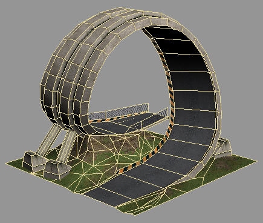
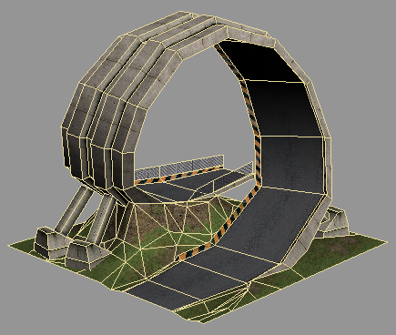
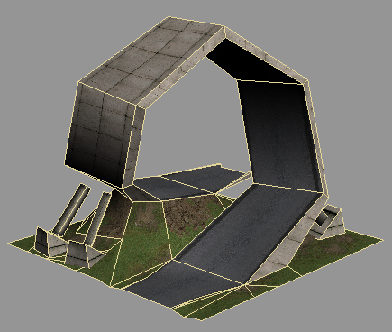

Crashday
offers up to four different “level of detail” steps which
will be visible with different distances if the corresponding mesh is
available. The collision detection is not influenced by any of these
meshes. It is only calculated by the standard visible mesh.
“Level
of detail” meshes are identified by their names. Below is a
list of LOD types you can provide:
|
[meshname].0
|
displayed
when closer than 36 meters. This .0 mesh is supported as an ultra detail-LOD. It is only visible when very close to the viewer and thus can have more detail than the base mesh
|
|
[meshname]
|
base
mesh, displayed whenever no “level of detail” is
displayed. This is the mesh you create sub meshes for. It is being used for collision detection as well.
|
|
[meshname].2
|
displayed
when distance more than 120 meters
|
|
[meshname].3
|
displayed
when distance more than 250 meters
|
|
[meshname].4
|
displayed
when distance more than 370 meters
|
Meshes
with bend capabilities (see Modeling and texturing guidelines) can have “level of detail” meshes as well, but make sure the borders of any
“level of detail” mesh are still subdivided every 5 meters.
Otherwise ugly seams will appear in the distance.

"main"
mesh in brgloop.p3d

"main.3"
mesh in brgloop.p3d

"main.4"
mesh in brgloop.p3d
 Neither does every mesh need one or more “level of detail” step(s),
nor does a mesh with sub LODs require all steps to be available. Please use “level of
detail” meshes wisely at places where it makes sense, as more meshes per .p3d
model file will also cost slightly more performance.
Neither does every mesh need one or more “level of detail” step(s),
nor does a mesh with sub LODs require all steps to be available. Please use “level of
detail” meshes wisely at places where it makes sense, as more meshes per .p3d
model file will also cost slightly more performance.